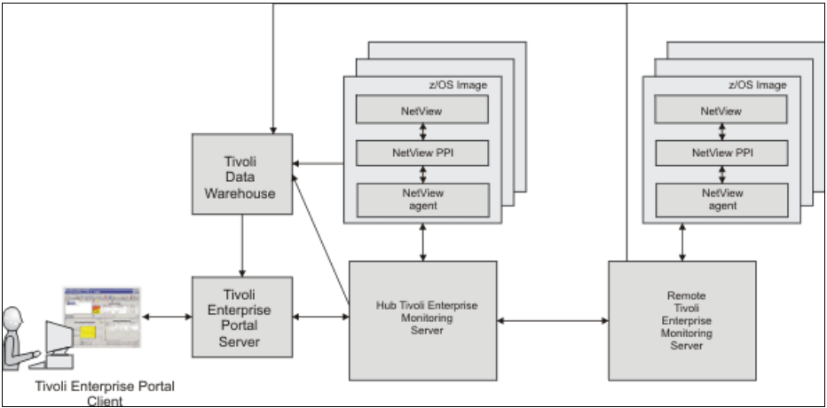
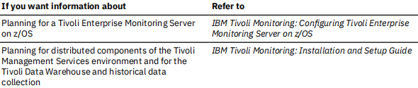
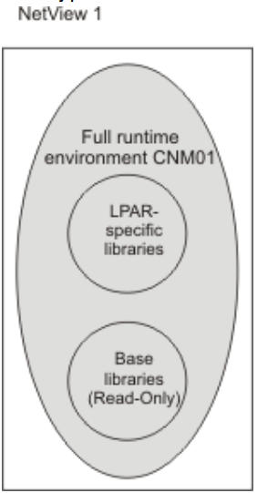
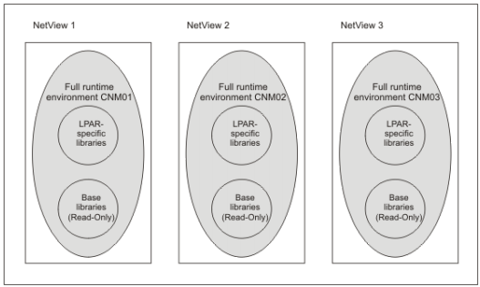
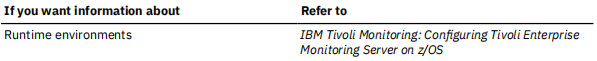
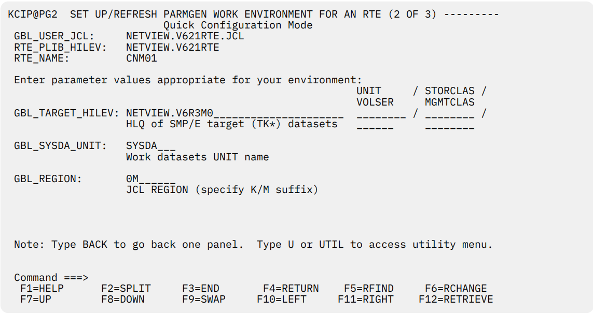
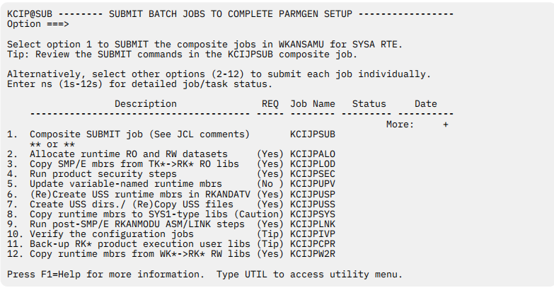
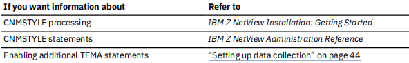
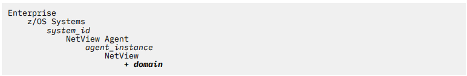
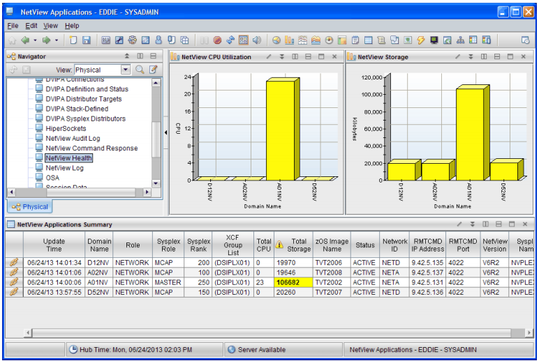

Chapter 1. Overview of the installation environment
The Z NetView Enterprise Management Agent (NetView agent) provides information that you can use to
manage your network from the Tivoli Enterprise Portal using sampled and real-time data. The data
provides information about network resources and outages, using situations and expert advice, as well as
trends in your network through the use of historical data. You can issue NetView, VTAM, and z/OS
commands directly from the Tivoli Enterprise Portal to provide instant display and troubleshooting
capabilities. The NetView agent enables you to manage both availability and performance data from the
Tivoli Enterprise Portal using cross-product links to selected z/OS OMEGAMON XE agents.
This book describes the installation and configuration tasks required to install the NetView agent:
- Defining the runtime environment
- Configuring the Tivoli Enterprise Monitoring Server (monitoring server)
- Configuring the NetView agent
- Updating NetView initialization statements
- Installing and configuring the distributed components (Tivoli Enterprise Portal and Tivoli Enterprise Portal Server)
- Verifying the configuration
- Implementing security
- Configuring historical data collection
If this is the first time you are configuring the NetView agent, review the progression of tasks defined in
the IBM Tivoli OMEGAMON XE Monitoring Agents on z/OS: Quick Start Guide.
If you are upgrading from a previous version of the NetView agent, refer to the IBM Tivoli OMEGAMON XE
and Tivoli Management Services on z/OS: Upgrade Guide and IBM Z NetView Installation: Migration Guide.
For a list of the changes to the NetView agent for this release, see Appendix C, “Enterprise Management
Agent Changes,” on page 73.
Configuration Scenarios
The Tivoli Management Services environment requires that installation and configuration be performed on
both the managed systems (z/OS) and on the systems where some of the Tivoli Management Services
components run. The installation steps for these components can be performed simultaneously, but
some of the configuration steps require that specific components already be installed.
Figure 1 on page 2 shows a sample Tivoli Management Services environment.

Figure 1. Sample Tivoli Management Services environment
As you work through this installation guide, complete one of the following installation scenarios:
- “Scenario 1: Creating a new runtime environment” on page 80
This scenario configures a hub monitoring server and the NetView agent running in the same z/OS system image. This scenario uses a full runtime environment.
- “Scenario 2: Updating the NetView agent in an existing RTE” on page 87
This scenario configures the NetView agent in an existing Tivoli Management Services environment. This scenario uses a full runtime environment.
For the installation scenarios in this book, make the following decisions:
-
If you are creating a new environment, decide on which z/OS image to deploy the hub monitoring server.
The scenarios are based on using a hub monitoring server running in a z/OS environment. Note that the hub monitoring server can run on any operating system supported by IBM Tivoli Monitoring 6.3. The steps for a non-z/OS environment are similar.
-
Decide where to deploy the Tivoli Enterprise Portal Server (portal server).
-
Decide which NetView domains you plan to manage using the NetView agent. An instance of the NetView agent is required on each z/OS image containing a NetView domain that you want to manage.

Installing the z/OS-based components using SMP/E
The System Modification Program Extended (SMP/E) tool is used to install and maintain software on z/OS
systems. For information on the supported levels of the SMP/E tool and other related installation
requirements, refer to the Program Directory for IBM Z NetView Enterprise Management Agent.
The Z NetView Enterprise Management Agent is a separate feature that has its own function modification
identifier (FMID). If you do not have IBM Tivoli Monitoring installed or want to set up a new environment,
see the Program Directory for IBM Tivoli Management Services on z/OS for the SMP/E installation
information. After installing Tivoli Monitoring Services, see IBM Tivoli OMEGAMON XE and Tivoli
Management Services on z/OS Common Planning and Configuration Guide.
Before starting the configuration procedures described in this book, perform the SMP/E installation of the
NetView product and optionally, Tivoli Management Services if not already installed. Also perform the
post-installation steps described in the NetView program directory, the Z NetView Enterprise
Management Agent program directory, and IBM Z NetView Installation: Getting Started.
Abbreviations used
Table 1 on page 3 includes abbreviations and their meaning.
| Table 1. Abbreviations |
| Abbreviation |
Meaning |
| &hilev |
High-level qualifier |
| &midlev |
The mid-level qualifier. Defaults to the runtime environment name. Used
in conjunction with the &rhilev and &rvhilev qualifiers. |
| &rhilev |
Runtime environment (RTE) high-level qualifier (non-VSAM) |
| &rte |
Name for the runtime environment that you are defining |
| &rvhilev |
Runtime high-level qualifier (VSAM) |
| &shilev |
High-level qualifier for the libraries (INST* libraries) |
| &thilev |
SMP/E maintained product target high-level qualifier |
PARMGEN configuration method
With the PARMGEN configuration method, you edit a comprehensive list of parameters that configure
Tivoli Management Services on z/OS components and the NetView agent. You then submit a series of jobs
to create a complete runtime environment using the parameter values that you specified. For more
information about the PARMGEN configuration method, see the OMEGAMON XE and Tivoli Management
Services on z/OS Common Planning and Configuration Guide. The parameter values specific to the
NetView agent are described in Appendix D, “NetView PARMGEN installation parameters,” on page 75.
Runtime environment (RTE)
A runtime environment (RTE) is a logical grouping of runtime libraries that are referenced by started tasks
that are running on a z/OS image. The PARMGEN tool is used to create and manage a runtime
environment. This runtime environment determines the number and types of runtime libraries that are
required. You must define a runtime environment on each z/OS image that is monitored by the NetView
agent.
Types of libraries created
Table 2 on page 4 summarizes the types of libraries that are created during installation and
configuration of the NetView agent.
| Table 2. Types of libraries |
| Type of Library |
Description |
| Runtime libraries |
General term for libraries referenced by started task procedures.
Includes SMP/E maintained product target, base, and z/OS image-specific libraries |
SMP/E maintained product target
libraries
Abbreviated thilev.
|
SMP/E maintained product target libraries |
Base libraries
Abbreviated &rhilev or &rhilev.&rte. |
Read-only runtime libraries that the configuration process does not
alter and that can be shared between systems. These libraries
physically exist in a Full or Base runtime environment, or as SMP/E
maintained product target libraries (if a runtime environment shares
with SMP/E).
The base libraries can contain the actual data sets maintained by
SMP/E, or a copy of them. Use a clone or copy of the SMP/E
installation libraries for a production environment. |
z/OS image-specific libraries
Abbreviated &rhilev.&rte.
|
Runtime libraries that are built during configuration to run on a
specific z/OS image. These libraries contain the unique elements
required for a particular z/OS image and cannot be shared among
z/OS images. They can be updated. |
You can optimize your product environment based on the library types. For example, by allocating
common base libraries to a single runtime environment that can be shared by other runtime
environments, you can substantially reduce the amount of disk space required, as well as simplify the
maintenance across remote z/OS images.
Types of runtime environments
Table 3 on page 4 explains the types of runtime environments that you can create during product
configuration. For more information about runtime environments, see the OMEGAMON XE and Tivoli
Management Services on z/OS Common Planning and Configuration Guide.
| Table 3. Types of runtime environments |
| Type of runtime environment |
Description |
Full (self-contained) runtime
environment |
Runtime environment containing a full set of dedicated libraries,
consisting of both z/OS image-specific libraries and a copy of the
SMP/E installation read-only base libraries eligible for sharing with
other runtime environments.
See Appendix E, “Configuring the NetView agent by using the
PARMGEN standard configuration method,” on page 79 for an
example. |
| Base runtime environment |
Runtime environment containing read-only libraries that are
independent of configuration. These libraries must be shared by
another runtime environment containing configuration information. |
| Sharing-with-base runtime environment |
Runtime environment containing z/OS image-specific libraries and
referencing the base libraries configured in a base runtime
environment. |
| Sharing-with-full runtime environment |
Runtime environment containing z/OS image-specific libraries and
referencing the base libraries configured in a full runtime
environment |
| Sharing-with-SMP/E runtime
environment |
Runtime environment containing z/OS image-specific libraries and
referencing the libraries managed by SMP/E |
Chapter 2. Configuring the NetView agent by using
the PARMGEN quick configuration method
The scenarios in this section use a full runtime environment named
CNM01. This environment contains all
the libraries that are required by the NetView agent. All base libraries and LPAR-specific libraries are
allocated within the
CNM01 runtime environment. The monitoring server can be on this image, or it can
exist on another system.
RTE Name: CNM01
Type: FULL
Hilev: NETVIEW.V621RTE
Midlev: CNM01
Shares with: (none)
This type of runtime environment is illustrated in
Figure 2 on page 7.

Figure 2. Full runtime environment on a single system
Figure 3 on page 8 shows the way that a full runtime environment can be expanded to more than one
z/OS image. Each runtime environment is self-contained; the three runtime environments CNM01,
CNM02, and CNM03 on systems NetView1, NetView2, and NetView3 do not share any libraries. The
monitoring server can be on one of these images or it can run on an external system.

Figure 3. Full runtime environments on several systems

The following scenarios contain procedures that you can follow to configure the NetView agent by using
the PARMGEN quick configuration method.
- “Scenario 1: Creating a new runtime environment” on page 8
- “Scenario 2: Converting an existing Configuration Tool RTE to PARMGEN and Updating it” on page 17
Scenario 1: Creating a new runtime environment
About this task
If you don't have any existing full runtime environment (RTE), you can use the PARMGEN Configuration
tool to create a new runtime environment. Follow these steps to create a new RTE and configure the
NetView agent.
Procedure
- Start the PARMGEN tool.
- Use the KCIJPCFG job to set up PARMGEN work environment for an RTE.
- Customize PARMGEN configuration profiles.
- Create the RTE members and jobs.
- Submit batch jobs to complete the PARMGEN setup.
Starting the PARMGEN tool
About this task
Follow these steps to start the PARMGEN tool:
- Log on to a TSO session.
- Enter ISPF.
- From the Primary Option Menu, enter Option 6 (Command).
- If you are using a 3270 Model 2 (24 x 80) display, turn off the predefined function (PF) keys so that the function keys are not truncated. To do this, enter PFSHOW on the command line and repeat this command until the ISPF default function keys are no longer displayed.
- From the command line, enter the following command:
EX ’&shilev.TKANCUS’
where &shilev is the high-level qualifier that you specified when you installed Tivoli Management
Services.
A panel similar to the following one is displayed:
KCIPQPGW
Welcome to the z/OS Installation and Configuration Tools for
z Systems Management Suites
-
Checklist: System preparation checklists
Tip: Read/Print Checklists prior to installation and configuration.
-
Installation Workflow:
SMP/E-install z/OS products with Install Job Generator (JOBGEN)
Conditional: JOBGEN is not required when using SystemPac or ServerPac.
-
Configuration Workflow (Post-installation):
Configure z/OS products with Parameter Generator Workflow (PARMGEN)
- What's New in PARMGEN? <=== Revised
Maintenance Level: HKCI310 PTF UA91952 (APAR OA51755 2Q17 Interim Feature)
©Copyright IBM Corporation 1992-2019
Licensed Material - Program Property of
IBM
Option ===>
| F1=HELP |
F2=SPLIT |
F3=END |
F4=RETURN |
F5=RFIND |
F6=RCHANGE |
| F7=UP |
F8=DOWN |
F9=SWAP |
F10=LEFT |
F11=RIGHT |
F12=RETRIEVE |
- Review the checklists by selecting Option 1.
- You can skip Option 2 if you have already completed this step when you installed Tivoli Management Services.
- For the Quick configuration, from the z/OS Installation and Configuration Tools panel, select Option 3 to display the Parameter Generator (PARMGEN) Workflow panel. A panel similar to the following is displayed.
KCIPQPGA -------- PARAMETER GENERATOR (PARMGEN) WORKFLOW MENU -----------------
Command ===>
Quick Configuration Mode
Enter parameter values appropriate for the LPAR runtime environment (RTE).
GBL_USER_JCL:
|
NETVIEW.V621RTE.JCL________________________
(for example, TDSF72.ITM63.DS630.SYSPLEX.PARMGEN.JCL)
Specify the dataset name of the PARMGEN common/global
library for the different LPAR runtime environments (RTEs).
Use the same dataset for managing the different LPAR RTEs.
Multiple users can specify the same dataset to manage RTEs. |
RTE_PLIB_HILEV:
|
NETVIEW.V621RTE_______________
Specify the High-Level Qualifier (&hlq) portion of the
PARMGEN interim staging and work libraries for this LPAR RTE:
- &hlq.&rte_name.IK* (IKANCMDU,IKANPARU,IKANSAMU)
- &hlq.&rte_name.WK* (WKANCMDU,WKANPARU,WKANSAMU)
- &hlq.&rte_name.WCONFIG |
RTE_NAME:
|
CNM01_ (Type ? for a list of configured RTEs)
Specify the runtime environment (&rte_name) for this LPAR. |
Press F1=Help for more information. Type U or UTIL to access utility menu.
| F1=HELP |
F2=SPLIT |
F3=END |
F4=RETURN |
F5=RFIND |
F6=RCHANGE |
| F7=UP |
F8=DOWN |
F9=SWAP |
F10=LEFT |
F11=RIGHT |
F12=RETRIEVE |
Note: PARMGEN has two types of installation modes: Quick configuration and Standard configuration.
This scenario documents the Quick configuration, which is the recommended method. For more
information about the Standard configuration method, see Appendix Configuring the NetView agent by
using the PARMGEN standard configuration method and the OMEGAMON shared publications.
- Enter the following parameter values for your environment:
GBL_USER_JCL
The name of a JCL library to be created for PARMGEN jobs, for example, NETVIEW.V621RTE.JCL.
RTE_PLIB_HILEV
The high-level qualifier for PARMGEN work libraries, for example, NETVIEW.V621RTE.
RTE_NAME
The name of the runtime environment to be created, for example, CNM01.
Press Enter after you fill in the parameter values. If the GBL_USER_JCL library that you specified on
the Parameter Generator (PARMGEN) Workflow panel does not exist, a message is displayed. Press
Enter to allocate the JCL library and proceed to the main options panel for PARMGEN:
KCIPQPGB PARAMETER GENERATOR (PARMGEN) WORKFLOW - PRIMARY OPTION MENU --------
Option ===>
Quick Configuration Mode
GBL_USER_JCL: NETVIEW.V621RTE.JCL
RTE_PLIB_HILEV: NETVIEW.V621RTE
RTE_NAME: CNM01
Notes:
|
Perform steps 1 through 5 in sequence, repeating steps as necessary.
If reconfiguring this RTE, see Maintenance Scenarios F1=Help topic.
Enter n (1-5) to perform tasks.
Enter ns (1s-5s) for detailed job/task status. |
| |
Description |
Job/Label |
Status |
Date |
| |
-------------------------------------------- |
--------- |
--------- |
---------- |
| 1. |
Set up/Refresh PARMGEN work environment. |
KCIJPCFG |
RC= 00000 |
2017/02/22 |
| 2. |
Customize PARMGEN configuration profiles. |
CNM01 |
Edited |
2015/02/27 |
| 3. |
Create this RTE's runtime members and jobs. |
$PARSE |
Enter 3 |
for details. |
| 4. |
Submit batch jobs to complete PARMGEN setup. |
SUBMIT |
Enter 4 |
for details. |
| 5. |
Perform post configuration steps. |
POSTCFG |
| R |
Create next RTE - Reset fields. |
New RTE |
Press F1=Help for more information. Type U or UTIL to access utility
menu.
| F1=HELP |
F2=SPLIT |
F3=END |
F4=RETURN |
F5=RFIND |
F6=RCHANGE |
| F7=UP |
F8=DOWN |
F9=SWAP |
F10=LEFT |
F11=RIGHT |
F12=RETRIEVE |
Option 1. KCIJPCFG Setting up PARMGEN work environment for an RTE
About this task
To use the KCIJPCFG job to set up PARMGEN work environment for an RTE, complete the following
steps:
Procedure
- From the Parameter Generator (PARMGEN) Workflow panel, select Option 1 to display the Set Up
PARMGEN Work Environment panel (1 of 3).
KCIPQPG1 SET UP/REFRESH PARMGEN WORK ENVIRONMENT FOR AN RTE (1 OF 3) ---------
Quick Configuration Mode
Specify the RTE model profile to use:
==> ?__________________________
- To create a new RTE based on a predefined IBM model, type a ? in
the field and press Enter, then select the appropriate template.
- To create a new RTE that is a clone of an existing PARMGEN RTE,
specify the WCONFIG profile library and RTE member name to clone;
for example: (&hlq.&rte.WCONFIG(&clone_from))
- To create a new RTE that is a clone of an ICAT-created RTE,
specify the ICAT RTE Batch member location and RTE member;
for example: (&hlq.ICAT.INSTJOBS(CNM01))
- To create a new RTE from scratch, leave this field blank.
- To reconfigure or upgrade this existing PARMGEN RTE, specify its values;
for example: (NETVIEW.V621RTE.CNM01.WCONFIG(CNM01))
Customize jobcard data:
==> //USER1A JOB NOTIFY=&SYSUID,____________________________________________
==> // CLASS=A,MSGCLASS=A,MSGLEVEL=(1,1)__________________________
==> //*______________________________________________________________________
==> //*______________________________________________________________________
Specify the Install Job Generator (JOBGEN) output library if you want
PARMGEN to reuse CALLLIBS parameters from the JOBGEN repository:
==> ____________________________________________
(Type ? for last referenced JOBGEN library discovered, if any.)
Press F1=Help for more information. Type U or UTIL to access utility
menu.
Command ===>
| F1=HELP |
F2=SPLIT |
F3=END |
F4=RETURN |
F5=RFIND |
F6=RCHANGE |
| F7=UP |
F8=DOWN |
F9=SWAP |
F10=LEFT |
F11=RIGHT |
F12=RETRIEVE |
- Enter a ? in the first input field, and update the job statement to be used for PARMGEN jobs, because
the scenario creates a new runtime environment.
For example, use the following code:
//USER1A JOB MSGLEVEL=1,MSGCLASS=A,NOTIFY=USER1
- Press Enter to go to the resulting panel.
- On the resulting panel, select @MDLHF Full RTE w/ Static Hub TEMS/Agents as the
template to use, and press Enter to return to panel 1 of 3:
KCIPQMDL ----------------- SELECT RTE MODEL FROM LIST ------ Row 1 to 22 of 22
Command ===>
Scroll ===> PAGE
Following is a list of predefined LPAR RTE model profiles available in
NETVIEW.V6R3M0.TKANSAM SMP/E target library.
Select ("S" or "/") an IBM RTE model to use to create the new CNM01 RTE.
Legend:
- $MDL* models: Recommended best-practice models for new RTE deployments.
- @MDL* models: Additional RTE models for new RTE deployments.
Note: For existing RTEs that want to use $MDLVARS model, use KCIJPMCF job
from the Utilities menu.
| Model |
Description |
Scenario |
| -------- |
------------------------------------------------ |
-------- |
| _ $MDLHA |
Full RTE w/ High Availability Hub TEMS |
QCF01 |
| _$MDLHFV |
Full RTE w/ Static Hub TEMS/Agents w/ variables |
QCF02 |
| s$MDLRSBV |
Sharing-w/-Base RTE w/ Remote/Agents w/ vars. |
QCF03 |
| _@MDLHF |
Full RTE w/ Static Hub TEMS/Agents |
QCF04 |
| _@MDLRF |
Full RTE w/ Remote TEMS/Agents |
QCF05 |
| _@MDLRFV |
Full RTE w/ Remote TEMS/Agents w/ variables |
QCF06 |
| _@MDLRSB |
Sharing-w/-Base RTE w/ Remote TEMS/Agents |
QCF07 |
| _@MDLRSS |
Sharing-w/-SMP RTE w/ Remote TEMS/Agents |
QCF08 |
| _@MDLRSSV |
Sharing-w/-SMP RTE w/ Remote/Agents w/ vars. |
QCF09 |
| _@MDLHSS |
Sharing-w/-SMP RTE w/ Static Hub TEMS/Agents |
QCF10 |
| _@MDLHSB |
Sharing-w/-Base RTE w/ Hub TEMS/Agents |
QCF12 |
| _$MDLAFV |
Full RTE w/ Agents only-no local TEMS w/ vars. |
QCF13 |
| _@MDLAF |
Full RTE w/ Agents only-no local TEMS |
QCF14 |
| _$MDLASBV |
Sharing-w/-Base RTE Agents-no local TEMS w/vars. |
QCF15 |
| _@MDLASB |
Sharing-w/-Base RTE w/ Agents only-no local TEMS |
QCF16 |
| _@MDLASSV |
Sharing-w/-SMP RTE Agents only-no local TEMS var |
QCF17 |
| _@MDLASS |
Sharing-w/-SMP RTE w/ Agents only-no local TEMS |
QCF18 |
| _$MDLHSSV |
Sharing-w/-SMP RTE w/ Hub/TOM/KJJ Agent w/ vars. |
QCF19 |
| _$MDLHSS |
Sharing-w/-SMP RTE w/ Hub/TOM/KJJ Agent only |
QCF20 |
| _$MDLHSBV |
Sharing-w/-Base RTE w/ Hub TEMS/Agents w/ vars. |
QCF21 |
| _@MDLHSSV |
Sharing-w/-SMP RTE w/ Hub TEMS/Agents w/ vars. |
QCF22 |
| _$MDLVARS |
Best-practice variables for RTE parameters |
QHOWTO_05 |
End of
data
| F1=HELP |
F2=SPLIT |
F3=END |
F4=RETURN |
F5=RFIND |
F6=RCHANGE |
| F7=UP |
F8=DOWN |
F9=SWAP |
F10=LEFT |
F11=RIGHT |
F12=RETRIEVE |
- Press Enter to go to panel 2 of 3 for setting up the work environment:

- From the Set Up PARMGEN Work Environment panel (2 of 3), specify a value for the following fields,
and press Enter:
GBL_TARGET_HILEV
The high-level qualifier for your SMP/E target libraries, for example, NETVIEW.V6R3M0.
GBL_SYSDA_UNIT
The disk unit name for non-VSAM data sets, for example, SYSDA.
GBL_REGION
Region size that the generated jobs will use.
- From the Set Up PARMGEN Work Environment panel (3 of 3), enter any values that are required by your installation for creating new data sets. Press Enter.
- The Display PARMGEN Environment Analysis panel lists the components that are installed in your TKANCUS data set. Press Enter to display the Include Products in the PARMGEN Customization panel.
- To include any products in the PARMGEN customization panel, enter / or S to the left of the product code.
By default, all products are preselected for customization. When you finish, specify Y in the confirm field, and press Enter.
- Review and submit the KCIJPCFG job. Verify that the job ends with a 0 return code. If the job does not end with a 0 return code, correct the job and resubmit it.
- Press F3 to display messages for the submitted job.
- Press Enter to return to the Parameter Generator (PARMGEN) Workflow panel.
Note the status and date on the right of the step that you just completed.
Option 2. Customizing PARMGEN configuration profiles
About this task
To edit PARMGEN configuration profiles, complete the following steps:
Procedure
- From the Parameter Generator (PARMGEN) Workflow panel, select Option 2 to customize configuration profiles. Use this option to override or specify values for the NetView agent configuration files.
Most of the IBM Tivoli Monitoring and NetView agent parameters are set in the RTE LPAR profile. Use the global parameters selection to specify the location of key libraries on your system.
Use a TSO editor to customize the files. Some optional values are commented out. If you modify any of these values, ensure that you also uncomment the statements.
- Select Option 1 to customize the RTE LPAR profile.
- The CONFIGURE_PRODUCTS section shows the products that are included or excluded. Review the default settings and update them as necessary for your installation. Parameters beginning with KDS are for the monitoring server. The NetView agent uses parameters beginning with KNA.
Ensure that you review and update the following parameters:
Type of monitoring server (hub):
This parameter is controlled by the KDS_TEMS_TYPE parameter. This parameter is set to HUB. For the NetView agent to connect to the monitoring server, ensure that the KNA_TEMS_LOCAL_CONNECT_FLAG parameter is set to Y and that the KNA_TEMS_TCP_HOST parameter is correct.
Communications-related information, for example TCP addresses:
Use a fully-qualified host name or TCPIP address. The addresses are assigned default values. Verify that the following monitoring server parameters are correct:
- RTE_TCP_HOST
- RTE_TCP_PORT_NUM
- RTE_TCP_STC
Verify that the following NetView agent parameters are correct:
- KNA_AGT_TCP_HOST
- KNA_TCP_STC
Verify that the following parameters that control the communications protocols used by the monitoring server and the NetView agent are correct:
- KDS_TEMS_COMM_PROTOCOLn, where n is a value 1-7.
- KDS_AGT_COMM_PROTOCOLn, where n is a value 1-7.
- KDS_TEMS_TCP_xxxxx_PORT_NUM, where xxxxx corresponds to the communications protocol (PIPE,UDP,PIPE6,UDP6,PIPES,PIPE6S).
Ensure that the KDS_TEMS_KLX_TCP_TOLERATERECYCLE parameter and KNA_AGT_KLX_TCP_TOLERATERECYCLE parameter are set to Y. This configuration enables the monitoring server and the NetView agent to reconnect to its TCP/IP stack without being recycled after the TCP/IP stack is recycled.
PPI sender and receiver names
The KNA_PPISND_PPI_SENDER_CNMEMATX and KNAA_PPIRCV_PPI_RECEIVER_CNMEMARX
parameters control the PPI sender and receiver names that are used by the NetView agent. The
sender name is controlled by the KNA_PPISND_PPI_SENDER_CNMEMATX parameter. The default
name is CNMEMATX. There is no matching CNMSTYLE statement. The receiver name is controlled
by the KNA_PPIRCV_PPI_RECEIVER_CNMEMARX parameter. This name must match the DESTPPI
receiver name that is specified in the CNMSTYLE member or its include member. The default value
is CNMEMARX.
Security settings to enable encryption for the monitoring server
Security settings to enable Take Action command forwarding
System commands that are issued from the Tivoli Enterprise Portal by using Take Action
commands or situations run without command authorization or an audit trail. You can use the
NetView product to perform command authorization for these system commands and to provide
an audit trail. Command authorization for the Take Action system commands uses the portal user
ID, which is sent to the NetView program with the command. The portal user ID that is sent is used
to determine the user ID that issues the command. When a command is sent from a situation, the
user ID that is sent is the last one that edited the situation. Password validation is not performed.
If a NetView operator ID exists that matches the portal user ID and has the required command
authorization, the command is run on the existing NetView operator ID. For more information
about protecting MVS system commands, see the IBM Tivoli Z NetView Security Reference. Some
agents provide their own Take Action commands, known as agent commands. Agent commands
have an associated two-character prefix for their product code. These commands are not sent to
the NetView program for command authorization. The only agent commands that are sent to the
NetView program for authorization are the NetView agent commands prefixed with NA. For
information about creating or editing a Take Action command, see the IBM Tivoli Monitoring: Tivoli
Enterprise Portal User's Guide. You can display Take Action commands and command responses in
the NetView Command Response workspace. Additionally, you can display the BNH806I and
BNH807I audit trail messages in the NetView Audit Log workspace.
Use the following parameters to enable command authorization checking for system commands sent
from the hub monitoring server:
KDS_PPI_RECEIVER
Specifies the name of the NetView PPI Receiver. The value must match the PPI receiver name
specified on the NetView APSERV command. The default value is CNMPCMDR
KDS_PPI_SENDER
Specifies a value for the PPI sender. If you do not specify a value, the job name of the monitoring
server is used when the command is written to the NetView log. Equivalent parameters are
available to enable command authorization checking for commands sent from the NetView agent.
KNA_AGT_KGLHC_PPI_RECEIVER
Specifies the name of the NetView PPI Receiver. The value must match the PPI receiver name
specified on the NetView APSERV command. The default value is CNMPCMDR.
KNA_AGT_KGLHC_PPI_SENDER
Specifies a value for the PPI sender.
- For definitions for the common parameters, see the IBM OMEGAMON and Tivoli Management
Services on z/OS shared documentation.
- For NetView agent definitions, see Appendix C, Enterprise Management Agent Changes.
- For information about configuring security settings for a monitoring server running in a z/OS
environment, see IBM OMEGAMON and Tivoli Management Services on z/OS shared
documentation.
- Press F3 to return to the menu panel.
- . Select Option 2 to review and specify global parameters. Review the default settings and update them
as necessary for your installation
Usage notes:
- The global parameters define system data sets that include started task procedures, load modules,
and configuration files. In many cases, the default high-level qualifier for the data set is SYS1.
Review the global parameters starting with the GLBL_DSN_SYS1 parameter and verify that the
correct data sets are defined.
- The GBL_DSN_NETVIEW_CNMLINK parameter specifies the name of the NetView CNMLINK data set.
The default is set to NETVIEW.VNRNMN.CNMLINK. You must change the
GBL_DSN_NETVIEW_CNMLINK parameter. Update the parameter to the correct name of the NetView
CNMLINK data set.
- Press F3 to return to the menu panel.
- Select Option 4 (WCONFIG). Locate the KNA$PENV member and edit it. Verify that it contains the
following statements:
CTIRA_RECONNECT_WAIT = 60
CTIRA_HEARTBEAT = 1
For more information about the CTIRA_ environment variables, see the IBM Tivoli Monitoring:
Installation and Setup Guide.
- Press F3 again to return to the Parameter Generator (PARMGEN) Workflow panel.
Option 3. Creating the RTE members and jobs
About this task
To create the RTE member and jobs, complete the following steps:
Procedure
- From the Parameter Generator (PARMGEN) Workflow panel, select Option 3 to create the RTE members and jobs. Prior to creating the runtime environment, the PARMGEN tool stores the specified configuration in a set of members in a working library. These members are used to create the configuration files in the runtime environment.
- Select Option 1 to edit the composite $PARSE job.
- Review and submit the KCIJPPRS job. Verify that the job ends with a 0 return code. If the job does not end with a 0 return code, correct the job and resubmit it.
- Press F3 to display messages for the submitted job.
- Press Enter to return to the menu panel.
- . Press F3 to return to the Parameter Generator (PARMGEN) Workflow panel.
Option 4. Submitting batch jobs to complete the PARMGEN setup
About this task
To complete the PARMGEN setup, you need to submit the batch jobs by performing the following steps:
Procedure
- From the Parameter Generator (PARMGEN) Workflow panel, select Option 4 to submit batch jobs to
complete the PARMGEN setup.
The Submit Batch Jobs To Complete PARMGEN Setup panel (KCIP@SUB) is displayed.

- Choose one of the following approaches to submit jobs:
- To submit some or all of the jobs needed for configuration in one step, select Option 1 to edit the
KCIJPSUB composite master submit job.
- To submit jobs separately, select other options 2-12 to submit each job individually based on your
requirements.
-
Review and verify the jobs.
- If you are using the composite master job, ensure all the jobs you want to submit this way are selected. The jobs that will be submitted are listed under directory
./ ADD NAME=SUBLIST in the KCIJPSUB job. The jobs that are commented out are not submitted. By default, the KCIJVSYS job and the KCIJPIVP job are not selected.
- Verify whether the jobs end with the right return code. Verify that the jobs end with a 0 return code. If the KCIJPIVP job is selected, it might end with a 4 return code, because the composite master job did not run all the jobs.
- If a job does not end with the expected return code, correct the individual job and resubmit it.
- Press F3 to display messages for the submitted job.
-
To submit additional jobs, choose one of the following steps to complete based on your situation:
- If you use the composite job, submit any additional jobs that were not selected in the KCIJPSUB job.
- If you don't use the composite job, submit any needed individual jobs from the Submit Batch Jobs
To Complete PARMGEN Setup panel.
For example, complete the following steps to submit the KCIJPUSS, KCIJPSYS, KCIJPIVP, and
KCIJPW2R jobs separately.
- Select Option 7 to edit the USS system setup job.
- Review and submit the KCIJPUSS job. Verify that the job ends with a 0 return code. If the job does not end with a 0 return code, correct the job and resubmit it.
- Press F3to display messages for the submitted job.
- Press Enter to return to the menu panel.
- Select Option 8 to edit the system setup job.
- Review and submit the KCIJPSYS job. Verify that the job ends with a 0 return code. If the job does not end with a 0 return code, correct the job and resubmit it.
- Press F3 to display messages for the submitted job.
- Press Enter to return to the menu panel.
- Select Option 10 to edit the configuration verification job.
- Review and submit the KCIJPIVP job. Verify that the job ends with a 0 or 4 return code. If the job does not end with a 0 or 4 return code, correct the job and resubmit it. If the job ends with a 4 return code, examine the job output for the reason.
- Press F3 to display messages for the submitted job.
- Press Enter to return to the menu panel.
- Select Option 12 to edit the WK* to RK* deployment job.
- Review and submit the KCIJPW2R job. Verify that the job ends with a 0 or 4 return code. If the job does not end with a 0 or 4 return code, correct the job and resubmit it. If the job ends with a 4 return code, examine the job output for the reason.
- Press F3 to display messages for the submitted job.
- Press Enter to return to the menu panel.
- Press F3 to return to the Parameter Generator (PARMGEN) Workflow panel.
- Press F3 twice to exit the PARMGEN tool.
What to do next
When you complete the procedure in this section, continue with Chapter 3, “Completing the NetView
agent configuration,” on page 27.
Scenario 2: Converting an existing Configuration Tool RTE to PARMGEN and
Updating it
About this task
In this scenario, a full runtime environment (RTE) already exists, which was created by using the
deprecated configuration tool. The existing environment has a hub Tivoli Enterprise Monitoring Server on
a different host and a working Tivoli Enterprise Portal Server. This RTE contains a remote Tivoli Enterprise
Monitoring Server into which the NetView agent connects.
Follow these steps to copy RTE parameters and configure a NetView agent into a new PARMGEN RTE
based on the existing RTE.
Procedure
- Create the batch parameter deck by using the configuration tool.
- Start the PARMGEN tool.
- Use the KCIJPCFG job to set up PARMGEN work environment for an RTE.
- Customize PARMGEN configuration profiles.
- Create the RTE members and jobs.
- Submit batch jobs to complete the PARMGEN setup.
Creating the batch parameter deck by using the configuration tool
About this task
Follow these steps to use the configuration tool to create a batch parameter deck that you will use to
configure the NetView agent.
Procedure
- Log on to a TSO session.
- Enter ISPF.
- From the Primary Option Menu, enter Option 6 (Command).
- Start the configuration tool. For example, from the command line enter the following command:
where &shilev is the high-level qualifier that you specified when you created the INSTLIB data set. The configuration tool Main Menu ID displayed.
- From the configuration tool Main Menu, enter 3. The Configure Products panel is displayed.
- Enter 1 to display the Product Selection menu.
- Enter S to select the NetView agent.
- Enter Z to select the RTE to be used as the source of the batch parameter deck.
- Enter 1 to display the Create/Clone Parameter Deck panel.
- Enter 1 to display the Create Batch Mode Parameters panel.
- From the Create Batch Mode Parameters panel, specify a value for the following fields and then press Enter:
Parameter Library:
The data set where the parameter deck will be located.
Member Name:
The member name into which the parameter deck is written.
Starting the PARMGEN tool
About this task
Follow these steps to start the PARMGEN tool:
Procedure
- Log on to a TSO session.
- Enter ISPF.
- From the Primary Option Menu, enter Option 6 (Command).
- If you are using a 3270 Model 2 (24 x 80) display, turn off the predefined function (PF) keys so that the function keys are not truncated. To do this, enter PFSHOW on the command line and repeat this command until the ISPF default function keys are no longer displayed.
- From the command line, enter the following command:
EX ’&shilev.TKANCUS’
where &shilev is the high-level qualifier that you specified when you installed Tivoli Management
Services.
A panel similar to the following one is displayed:
KCIPQPGW
Welcome to the z/OS Installation and Configuration Tools for
z Systems Management Suites
- Checklist: System preparation checklists
Tip: Read/Print Checklists prior to installation and configuration.
- Installation Workflow:
SMP/E-install z/OS products with Install Job Generator (JOBGEN)
Conditional: JOBGEN is not required when using SystemPac or ServerPac.
- Configuration Workflow (Post-installation):
Configure z/OS products with Parameter Generator Workflow (PARMGEN)
- What's New in PARMGEN? <=== Revised
Maintenance Level: HKCI310 PTF UA91952 (APAR OA51755 2Q17 Interim Feature)
©Copyright IBM Corporation 1992-2019
Licensed Material - Program Property of
IBM
Option ===>
| F1=HELP |
F2=SPLIT |
F3=END |
F4=RETURN |
F5=RFIND |
F6=RCHANGE |
| F7=UP |
F8=DOWN |
F9=SWAP |
F10=LEFT |
F11=RIGHT |
F12=RETRIEVE |
- Review the checklists by selecting Option 1.
- You can skip Option 2 if you have already completed this step when you installed Tivoli Management Services.
- For the Quick configuration, from the z/OS Installation and Configuration Tools panel, select Option 3 to display the Parameter Generator (PARMGEN) Workflow panel. A panel similar to the following is displayed.
KCIPQPGA -------- PARAMETER GENERATOR (PARMGEN) WORKFLOW MENU -----------------
Command ===>
Quick Configuration Mode
Enter parameter values appropriate for the LPAR runtime environment (RTE).
GBL_USER_JCL:
|
NETVIEW.V621RTE.JCL________________________
(for example, TDSF72.ITM63.DS630.SYSPLEX.PARMGEN.JCL)
Specify the dataset name of the PARMGEN common/global
library for the different LPAR runtime environments (RTEs).
Use the same dataset for managing the different LPAR RTEs.
Multiple users can specify the same dataset to manage RTEs. |
RTE_PLIB_HILEV:
|
NETVIEW.V621RTE_______________
Specify the High-Level Qualifier (&hlq) portion of the
PARMGEN interim staging and work libraries for this LPAR RTE:
- &hlq.&rte_name.IK* (IKANCMDU,IKANPARU,IKANSAMU)
- &hlq.&rte_name.WK* (WKANCMDU,WKANPARU,WKANSAMU)
- &hlq.&rte_name.WCONFIG |
| RTE_NAME: |
CNM01_ (Type ? for a list of configured RTEs)
Specify the runtime environment (&rte_name) for this LPAR. |
Press F1=Help for more information. Type U or UTIL to access utility menu.
| F1=HELP |
F2=SPLIT |
F3=END |
F4=RETURN |
F5=RFIND |
F6=RCHANGE |
| F7=UP |
F8=DOWN |
F9=SWAP |
F10=LEFT |
F11=RIGHT |
F12=RETRIEVE |
- Enter the following parameter values for your environment:
GBL_USER_JCL
The name of a JCL library to be created for PARMGEN jobs, for example, NETVIEW.V621RTE.JCL.
RTE_PLIB_HILEV
The high-level qualifier for PARMGEN work libraries, for example, NETVIEW.V621RTE.
RTE_NAME
The name of the runtime environment to be created, for example, CNM01.
Press Enter after you fill in the parameter values. If the GBL_USER_JCL library that you specified on
the Parameter Generator (PARMGEN) Workflow panel does not exist, a message is displayed. Press
Enter to allocate the JCL library and proceed to the main options panel for PARMGEN:
KCIPQPGB PARAMETER GENERATOR (PARMGEN) WORKFLOW - PRIMARY OPTION MENU --------
Option ===>
Quick Configuration Mode
GBL_USER_JCL: NETVIEW.V621RTE.JCL
RTE_PLIB_HILEV: NETVIEW.V621RTE
RTE_NAME: CNM01
Notes:
|
Perform steps 1 through 5 in sequence, repeating steps as necessary.
If reconfiguring this RTE, see Maintenance Scenarios F1=Help topic.
Enter n (1-5) to perform tasks.
Enter ns (1s-5s) for detailed job/task status. |
| |
Description |
Job/Label |
Status |
Date |
| |
-------------------------------------------- |
--------- |
--------- |
---------- |
| 1. |
Set up/Refresh PARMGEN work environment. |
KCIJPCFG |
RC= 00000 |
2017/02/22 |
| 2. |
Customize PARMGEN configuration profiles. |
CNM01 |
Edited |
2015/02/27 |
| 3. |
Create this RTE's runtime members and jobs. |
$PARSE |
Enter 3 |
for details. |
| 4. |
Submit batch jobs to complete PARMGEN setup. |
SUBMIT |
Enter 4 |
for details. |
| 5. |
Perform post configuration steps. |
POSTCFG |
| R |
Create next RTE - Reset fields. |
New RTE |
Press F1=Help for more information. Type U or UTIL to access utility
menu.
| F1=HELP |
F2=SPLIT |
F3=END |
F4=RETURN |
F5=RFIND |
F6=RCHANGE |
| F7=UP |
F8=DOWN |
F9=SWAP |
F10=LEFT |
F11=RIGHT |
F12=RETRIEVE |
Option 1. KCIJPCFG Setting up PARMGEN work environment for an RTE
About this task
To use the KCIJPCFG job to set up PARMGEN work environment for an RTE, complete the following
steps:
Procedure
- From the Parameter Generator (PARMGEN) Workflow panel, select Option 1 to display the Set Up
PARMGEN Work Environment panel (1 of 3).
KCIPQPG1 SET UP/REFRESH PARMGEN WORK ENVIRONMENT FOR AN RTE (1 OF 3) ---------
Quick Configuration Mode
Specify the RTE model profile to use:
==> ?__________________________
- To create a new RTE based on a predefined IBM model, type a ? in
the field and press Enter, then select the appropriate template.
- To create a new RTE that is a clone of an existing PARMGEN RTE,
specify the WCONFIG profile library and RTE member name to clone;
for example: (&hlq.&rte.WCONFIG(&clone_from))
- To create a new RTE that is a clone of an ICAT-created RTE,
specify the ICAT RTE Batch member location and RTE member;
for example: (&hlq.ICAT.INSTJOBS(CNM01))
- To create a new RTE from scratch, leave this field blank.
- To reconfigure or upgrade this existing PARMGEN RTE, specify its values;
for example: (NETVIEW.V621RTE.CNM01.WCONFIG(CNM01))
Customize jobcard data:
==> //USER1A JOB NOTIFY=&SYSUID,____________________________________________
==> // CLASS=A,MSGCLASS=A,MSGLEVEL=(1,1)__________________________
==> //*______________________________________________________________________
==> //*______________________________________________________________________
Specify the Install Job Generator (JOBGEN) output library if you want
PARMGEN to reuse CALLLIBS parameters from the JOBGEN repository:
==> ____________________________________________
(Type ? for last referenced JOBGEN library discovered, if any.)
Press F1=Help for more information. Type U or UTIL to access utility
menu.
Command ===>
| F1=HELP |
F2=SPLIT |
F3=END |
F4=RETURN |
F5=RFIND |
F6=RCHANGE |
| F7=UP |
F8=DOWN |
F9=SWAP |
F10=LEFT |
F11=RIGHT |
F12=RETRIEVE |
- . From the Set Up PARMGEN Work Environment panel, enter the location of the batch parameter deck
and enter a job statement to be used for PARMGEN jobs.
For example, use the following code:
//USER1A JOB MSGLEVEL=1,MSGCLASS=A,NOTIFY=USER1
From the Set Up PARMGEN Work Environment panel (2 of 3), specify a value for the following fields,
and press Enter:
GBL_TARGET_HILEV
The high-level qualifier for your SMP/E target libraries, for example, NETVIEW.V6R3M0.
GBL_SYSDA_UNIT
The disk unit name for non-VSAM data sets, for example, SYSDA.
GBL_REGION
Region size that the generated jobs will use.
From the Set Up PARMGEN Work Environment panel (3 of 3), enter any values that are required by your installation for creating new data sets. Press Enter.
The Display PARMGEN Environment Analysis panel lists the components that are installed in your TKANCUS data set. Press Enter to display the Include Products in the PARMGEN Customization panel.
To include any products in the PARMGEN customization panel, enter / or S to the left of the product code.
By default, all products are preselected for customization. When you finish, specify Y in the confirm field, and press Enter.
Review and submit the KCIJPCFG job. Verify that the job ends with a 0 return code. If the job does not end with a 0 return code, correct the job and resubmit it.
Press F3 to display messages for the submitted job.
Press Enter to return to the Parameter Generator (PARMGEN) Workflow panel.
Note the status and date on the right of the step that you just completed.
Option 2. Customizing PARMGEN configuration profiles
About this task
To edit PARMGEN configuration profiles, complete the following steps:
Procedure
- From the Parameter Generator (PARMGEN) Workflow panel, select Option 2 to customize configuration profiles. Use this option to override or specify values for the NetView agent configuration files.
Most of the IBM Tivoli Monitoring and NetView agent parameters are set in the RTE LPAR profile. Use the global parameters selection to specify the location of key libraries on your system.
Use a TSO editor to customize the files. Some optional values are commented out. If you modify any of these values, ensure that you also uncomment the statements.
- Select Option 1 to customize the RTE LPAR profile.
- The CONFIGURE_PRODUCTS section shows the products that are included or excluded. Review the default settings and update them as necessary for your installation. Parameters beginning with KDS are for the monitoring server. The NetView agent uses parameters beginning with KNA.
Ensure that you review and update the following parameters:
Type of monitoring server (hub):
This parameter is controlled by the KDS_TEMS_TYPE parameter. This parameter is set to HUB. For the NetView agent to connect to the monitoring server, ensure that the KNA_TEMS_LOCAL_CONNECT_FLAG parameter is set to Y and that the KNA_TEMS_TCP_HOST parameter is correct.
Communications-related information, for example TCP addresses:
Use a fully-qualified host name or TCPIP address. The addresses are assigned default values. Verify that the following monitoring server parameters are correct:
- RTE_TCP_HOST
- RTE_TCP_PORT_NUM
- RTE_TCP_STC
Verify that the following NetView agent parameters are correct:
- KNA_AGT_TCP_HOST
- KNA_TCP_STC
Verify that the following parameters that control the communications protocols used by the monitoring server and the NetView agent are correct:
- KDS_TEMS_COMM_PROTOCOLn, where n is a value 1-7.
- KDS_AGT_COMM_PROTOCOLn, where n is a value 1-7.
- KDS_TEMS_TCP_xxxxx_PORT_NUM, where xxxxx corresponds to the communications protocol (PIPE,UDP,PIPE6,UDP6,PIPES,PIPE6S).
Ensure that the KDS_TEMS_KLX_TCP_TOLERATERECYCLE parameter and KNA_AGT_KLX_TCP_TOLERATERECYCLE parameter are set to Y. This configuration enables the monitoring server and the NetView agent to reconnect to its TCP/IP stack without being recycled after the TCP/IP stack is recycled.
PPI sender and receiver names
The KNA_PPISND_PPI_SENDER_CNMEMATX and KNAA_PPIRCV_PPI_RECEIVER_CNMEMARX
parameters control the PPI sender and receiver names that are used by the NetView agent. The
sender name is controlled by the KNA_PPISND_PPI_SENDER_CNMEMATX parameter. The default
name is CNMEMATX. There is no matching CNMSTYLE statement. The receiver name is controlled
by the KNA_PPIRCV_PPI_RECEIVER_CNMEMARX parameter. This name must match the DESTPPI
receiver name that is specified in the CNMSTYLE member or its include member. The default value
is CNMEMARX.
Security settings to enable encryption for the monitoring server
Security settings to enable Take Action command forwarding
System commands that are issued from the Tivoli Enterprise Portal by using Take Action
commands or situations run without command authorization or an audit trail. You can use the
NetView product to perform command authorization for these system commands and to provide
an audit trail. Command authorization for the Take Action system commands uses the portal user
ID, which is sent to the NetView program with the command. The portal user ID that is sent is used
to determine the user ID that issues the command. When a command is sent from a situation, the
user ID that is sent is the last one that edited the situation. Password validation is not performed.
If a NetView operator ID exists that matches the portal user ID and has the required command
authorization, the command is run on the existing NetView operator ID. For more information
about protecting MVS system commands, see the IBM Tivoli Z NetView Security Reference. Some
agents provide their own Take Action commands, known as agent commands. Agent commands
have an associated two-character prefix for their product code. These commands are not sent to
the NetView program for command authorization. The only agent commands that are sent to the
NetView program for authorization are the NetView agent commands prefixed with NA. For
information about creating or editing a Take Action command, see the IBM Tivoli Monitoring: Tivoli
Enterprise Portal User's Guide. You can display Take Action commands and command responses in
the NetView Command Response workspace. Additionally, you can display the BNH806I and
BNH807I audit trail messages in the NetView Audit Log workspace.
Use the following parameters to enable command authorization checking for system commands sent
from the hub monitoring server:
KDS_PPI_RECEIVER
Specifies the name of the NetView PPI Receiver. The value must match the PPI receiver name
specified on the NetView APSERV command. The default value is CNMPCMDR
KDS_PPI_SENDER
Specifies a value for the PPI sender. If you do not specify a value, the job name of the monitoring
server is used when the command is written to the NetView log. Equivalent parameters are
available to enable command authorization checking for commands sent from the NetView agent.
KNA_AGT_KGLHC_PPI_RECEIVER
Specifies the name of the NetView PPI Receiver. The value must match the PPI receiver name
specified on the NetView APSERV command. The default value is CNMPCMDR.
KNA_AGT_KGLHC_PPI_SENDER
Specifies a value for the PPI sender.
- For definitions for the common parameters, see the IBM OMEGAMON and Tivoli Management
Services on z/OS shared documentation.
- For NetView agent definitions, see Appendix C, Enterprise Management Agent Changes.
- For information about configuring security settings for a monitoring server running in a z/OS
environment, see IBM OMEGAMON and Tivoli Management Services on z/OS shared
documentation.
- Press F3 to return to the menu panel.
- . Select Option 2 to review and specify global parameters. Review the default settings and update them
as necessary for your installation
Usage notes:
- The global parameters define system data sets that include started task procedures, load modules,
and configuration files. In many cases, the default high-level qualifier for the data set is SYS1.
Review the global parameters starting with the GLBL_DSN_SYS1 parameter and verify that the
correct data sets are defined.
- The GBL_DSN_NETVIEW_CNMLINK parameter specifies the name of the NetView CNMLINK data set.
The default is set to NETVIEW.VNRNMN.CNMLINK. You must change the
GBL_DSN_NETVIEW_CNMLINK parameter. Update the parameter to the correct name of the NetView
CNMLINK data set.
- Press F3 to return to the menu panel.
- Select Option 4 (WCONFIG). Locate the KNA$PENV member and edit it. Verify that it contains the
following statements:
CTIRA_RECONNECT_WAIT = 60
CTIRA_HEARTBEAT = 1
For more information about the CTIRA_ environment variables, see the IBM Tivoli Monitoring:
Installation and Setup Guide.
- Press F3 again to return to the Parameter Generator (PARMGEN) Workflow panel.
Option 3. Creating the RTE members and jobs
About this task
To create the RTE member and jobs, complete the following steps:
Procedure
- From the Parameter Generator (PARMGEN) Workflow panel, select Option 3 to create the RTE members and jobs. Prior to creating the runtime environment, the PARMGEN tool stores the specified configuration in a set of members in a working library. These members are used to create the configuration files in the runtime environment.
- Select Option 1 to edit the composite $PARSE job.
- Review and submit the KCIJPPRS job. Verify that the job ends with a 0 return code. If the job does not end with a 0 return code, correct the job and resubmit it.
- Press F3 to display messages for the submitted job.
- Press Enter to return to the menu panel.
- . Press F3 to return to the Parameter Generator (PARMGEN) Workflow panel.
Option 4. Submitting batch jobs to complete the PARMGEN setup
About this task
To complete the PARMGEN setup, you need to submit the batch jobs by performing the following steps:
Procedure
- From the Parameter Generator (PARMGEN) Workflow panel, select Option 4 to submit batch jobs to
complete the PARMGEN setup.
The Submit Batch Jobs To Complete PARMGEN Setup panel (KCIP@SUB) is displayed.
- Choose one of the following approaches to submit jobs:
- To submit some or all of the jobs needed for configuration in one step, select Option 1 to edit the
KCIJPSUB composite master submit job.
- To submit jobs separately, select other options 2-12 to submit each job individually based on your
requirements.
-
Review and verify the jobs.
- If you are using the composite master job, ensure all the jobs you want to submit this way are selected. The jobs that will be submitted are listed under directory
./ ADD NAME=SUBLIST in the KCIJPSUB job. The jobs that are commented out are not submitted. By default, the KCIJVSYS job and the KCIJPIVP job are not selected.
- Verify whether the jobs end with the right return code. Verify that the jobs end with a 0 return code. If the KCIJPIVP job is selected, it might end with a 4 return code, because the composite master job did not run all the jobs.
- If a job does not end with the expected return code, correct the individual job and resubmit it.
- Press F3 to display messages for the submitted job.
-
To submit additional jobs, choose one of the following steps to complete based on your situation:
- If you use the composite job, submit any additional jobs that were not selected in the KCIJPSUB job.
- If you don't use the composite job, submit any needed individual jobs from the Submit Batch Jobs
To Complete PARMGEN Setup panel.
For example, complete the following steps to submit the KCIJPUSS, KCIJPSYS, KCIJPIVP, and
KCIJPW2R jobs separately.
- Select Option 7 to edit the USS system setup job.
- Review and submit the KCIJPUSS job. Verify that the job ends with a 0 return code. If the job does not end with a 0 return code, correct the job and resubmit it.
- Press F3to display messages for the submitted job.
- Press Enter to return to the menu panel.
- Select Option 8 to edit the system setup job.
- Review and submit the KCIJPSYS job. Verify that the job ends with a 0 return code. If the job does not end with a 0 return code, correct the job and resubmit it.
- Press F3 to display messages for the submitted job.
- Press Enter to return to the menu panel.
- Select Option 10 to edit the configuration verification job.
- Review and submit the KCIJPIVP job. Verify that the job ends with a 0 or 4 return code. If the job does not end with a 0 or 4 return code, correct the job and resubmit it. If the job ends with a 4 return code, examine the job output for the reason.
- Press F3 to display messages for the submitted job.
- Press Enter to return to the menu panel.
- Select Option 12 to edit the WK* to RK* deployment job.
- Review and submit the KCIJPW2R job. Verify that the job ends with a 0 or 4 return code. If the job does not end with a 0 or 4 return code, correct the job and resubmit it. If the job ends with a 4 return code, examine the job output for the reason.
- Press F3 to display messages for the submitted job.
- Press Enter to return to the menu panel.
- Press F3 to return to the Parameter Generator (PARMGEN) Workflow panel.
- Press F3 twice to exit the PARMGEN tool.
What to do next
When you complete the procedure in this section, continue with Chapter 3, “Completing the NetView
agent configuration,” on page 27.
Chapter 3. Completing the NetView agent
configuration
To complete the configuration of the NetView agent with a Tivoli Enterprise Monitoring Server running in a
z/OS environment, follow these procedures:
- “Updating NetView initialization statements” on page 28
- “Loading the agent data files and configuring the portal” on page 29
- “Adding application support to the Tivoli Enterprise Monitoring Server” on page 32
APF-authorizing your libraries
Ensure that the following libraries are APF-authorized:
- CNMLINK (authorized when you installed the NetView program)
- RKANMOD
- RKANMODL
- RKANMODU
- Any runtime libraries that are concatenated in the STEPLIB DDNAME and in the RKANMODL DDNAME of the IBMNA and IBMDS started tasks
For information on APF-authorizing these data sets, refer to
IBM Z NetView Installation: Getting Started.
Authorizing the KPDDSCO program
Persistent data store maintenance uses the KPDDSCO program. This program must run as an authorized
program under TSO.
To authorize the KPDDSCO program, update the IKJTSOxx member in the SYS1.PARMLIB data set. For
information on authorizing this program, refer to
IBM Z NetView Installation: Getting Started.
You can refresh the IKJTSOnn member by issuing the following SET command:
T IKJTSO=nn
Copying the started task procedures to your procedure library
You used the configuration tool to create started task procedures in the RKANSAMU data set. To
complete the configuration, do these steps:
- Copy the Tivoli Enterprise Monitoring Server started task (IBMDS) from the RKANSAMU data set to your PROCLIB data set.
- Copy the NetView agent started task (IBMNA) from the RKANSAMU data set to your PROCLIB data set.
- The started task procedures include a SYSTCPD DD statement that is commented out. Tivoli Management Services requires that host names be resolvable by TCP/IP. If your environment does not include a domain name service, uncomment this DD statement and modify it to comply with your environment.
- Copy the persistent data store maintenance procedure (KPDPROC1) from the RKANSAMU data set to your PROCLIB data set.
Starting the hub Tivoli Enterprise Monitoring Server
Before you begin the installation and configuration of the distributed components, start the hub Tivoli
Enterprise Monitoring Server:
- From the z/OS system console, start the Tivoli Enterprise Monitoring Server. The following command
uses the default started task procedure name:
S IBMDS
- To verify that the Tivoli Enterprise Monitoring Server started successfully, you should see the following
message on the z/OS system console, in the SYSLOG data set, or in the RKLVLOG data set for the Tivoli
Enterprise Monitoring Server started task procedure:
KO4SRV032 Tivoli Enterprise Monitoring Server (TEMS) startup complete.
Installing the Tivoli Management Services components
Tivoli Management Services consists of the following commonly shared components:
- Tivoli Enterprise Portal Server and clients
- Tivoli Data Warehouse
- TMS:Engine
- Event synchronization component
- Tivoli Enterprise Portal Server extended services
For a description of these components, see the OMEGAMON XE and Tivoli Management Services on z/OS
Common Planning and Configuration Guide.
For information on installing these components, refer to the IBM Tivoli Monitoring: Installation and Setup
Guide.
During the installation process, you must provide a host name or IP address for the hub Tivoli Enterprise
Monitoring Server. When supplying the host name, provide the fully qualified host name. You are also
required to enter passwords on some panels. For some operating systems, you are required to provide a
password of 6 or more characters. Check the password requirements for your operating system before
you begin the installation process.
After installing the Tivoli Enterprise Portal and Tivoli Enterprise Portal Server, verify the installation by
locating the entries for the installed Tivoli Management Services components in the Manage Tivoli
Enterprise Monitoring Services window. If the installation was not successful, check the installation log
found in the <install_dir>\INSTALL\nnnTimestamp.log file (where nnn is the title of the DVD) to determine
the problem and try the installation again.
Updating NetView initialization statements
The CNMSTYLE member in the DSIPARM data set is used during NetView initialization. To make changes
to a statement in the CNMSTYLE member, copy the statement to either the CNMSTUSR or CxxSTGEN
member. You can then modify the statement. For information about changing CNMSTYLE statements, see
IBM Z NetView Installation: Getting Started.
Update the following CNMSTYLE statements:
- If you did not already enable the Z NetView Enterprise Management Agent tower, delete the asterisk
(*) preceding the TEMA tower in the TOWER statement.
- . If you enabled the TEMA tower or changed any TEMA subtower statements, recycle the NetView
program.

Loading the agent data files and configuring the portal
If the self-describing agent (SDA) function for the NetView agent has been enabled, it will update and
configure the Tivoli Enterprise Portal agent and client. If it is not enabled, follow these procedures to load
the NetView agent data files and to configure the Tivoli Management Services environment:
- “Loading files and configuring the Tivoli Enterprise Portal in a Windows environment” on page 29
- “Loading files and configuring the Tivoli Enterprise Portal in the Linux and AIX environments” on page
30
For more information on the self-describing agent function, see “Adding application support to the Tivoli
Enterprise Monitoring Server” on page 32.
Loading files and configuring the Tivoli Enterprise Portal in a Windows environment
The NetView agent data files are found on the IBM Z NetView Enterprise Management Agent data files
DVD. Do these steps to install the files.
- Log on to Windows using an ID with administrator authority.
- Close any running applications.
- Insert the Z NetView Enterprise Management Agent DVD into your DVD drive.
- Installation begins automatically.
- If the installation process does not start, run setup.exe from the Windows directory of the installation DVD. If setup.exe initialization fails, you might not have enough free disk space to decompress the setup files.
- From the Z NetView Enterprise Management Agent installation wizard Welcome window, click Next.
The Install Prerequisites window is displayed.
- From the Install Prerequisites window, click
Next
. The Software License Agreement is displayed.
- Read and accept the software license agreement. Click Accept to display the Select Features window.
- Select Tivoli Enterprise Portal Server and TEP Desktop Client.
Note: If you are using a distributed Tivoli Enterprise Monitoring Server on the same server as the Tivoli Enterprise Portal Server, additional component check boxes are displayed.
- Click
Next
. The Start Copying Files window is displayed.
- Click
Next
. When the files have been copied, the Setup Type window is displayed.
- Ensure that both Configure Tivoli Enterprise Portal and Launch Manage Tivoli Enterprise Monitoring Services are selected, and then click Next.
Note: If you are using a distributed Tivoli Enterprise Monitoring Server on the same server as the Tivoli Enterprise Portal Server, additional component check boxes are displayed.
- In the remaining windows in the installation wizard, you are prompted to provide information specific to your environment.
- When the installation wizard is finished, the InstallShield Wizard Complete window is displayed. The Display the Readme file check box should already be selected. Click Finish to exit the wizard.
- Review the readme file and then close the window.
- When the installation process completes:
- The Manage Tivoli Enterprise Monitoring Services window is displayed.
- If the Manage Tivoli Enterprise Monitoring Services window is not displayed, you can open it by clicking Start > Programs > IBM Tivoli Monitoring > Manage Tivoli Monitoring Services.
- Review the Tivoli Enterprise Portal Server Status field. If the server is not already started, right-click Tivoli Enterprise Portal Server and then click Start.
- Uncomment the USE_EGG1_FLAG=1 statement, in IBM\ITM\CNPS\kfwenv (Windows default directory).
- To log on to Tivoli Enterprise Portal, right-click the Tivoli Enterprise Portal Desktop and then click Start. The default user ID is sysadmin. There is no default password when running with a Tivoli Enterprise Monitoring Server on a z/OS system.
- Verify that the Enterprise Status window is displayed.
Loading files and configuring the Tivoli Enterprise Portal in the Linux and AIX®
environments
To complete this process, the components on which you are to install support must be in the same
directory structure as defined by the $install_dir environment variable or the value of the -h flag when
using the install.sh installation script.
Do these steps to install the agent data files:
- Stop the Tivoli Enterprise Portal Server by entering the following command from the $install_dir/bin
directory:
./itmcmd agent stop cq
- Run the following command from the installation media
./install.sh -h $install_dir
$install_dir is the home directory for the IBM Tivoli Monitoring products.
- When you are prompted for the IBM Tivoli Monitoring home directory, do one of the following steps:
- Press Enter to accept the default directory (/opt/IBM/ITM).
- Enter the full path to the installation directory that you used.
- When you are prompted for an installation option, enter 1 as shown in Figure 4 on page 30.
Select one of the following:
- Install products to the local host.
- Install products to depot for remote deployment (requires TEMS).
- Install TEMS support for remote seeding.
- Exit install.
Please enter a valid number:
1
- Review the license agreement and enter 1 to accept the terms of the agreement
- . A list of currently installed products is displayed followed by a numbered list of categories for which
product packages are available. Enter the number that corresponds to the Tivoli Enterprise Portal
Browser Client support as shown in Figure 5 on page 31.
Product packages are available for the following operating systems
and component support categories:
- Tivoli Enterprise Portal Browser Client support
- Tivoli Enterprise Portal Server support
- Tivoli Enterprise Monitoring Server support
Type the number for the OS you want, or type "q" to quit selection: 1
- At the prompt, enter y to confirm the request.
- . When the next list of the components to install is displayed, enter the number that corresponds to
the IBM Z NetView Enterprise Management Agent as shown in Figure 6 on page 31.
The following application supports are available for installation:
- IBM Z NetView Enterprise Management Agent V06.21.00.00
- All of the above
Figure 6. Installation of the agent
- At the prompt, enter y to confirm the installation. The installation begins.
-
Install the agent data files for each IBM Tivoli Monitoring component that is on the server, for example:
- Tivoli Enterprise Portal Browser Client support
- Tivoli Enterprise Portal Server support
- Tivoli Enterprise Monitoring Server support
- Select the number corresponding to the component for which you want support.
- At the prompt, enter 1 for Yes to confirm the request.
- Select the number corresponding to IBM Z NetView Enterprise Management Agent.
- At the prompt, enter 1 for Yes to confirm the request.
- If you have additional components, enter 1 for Yes and repeat these steps for the next component.
- After all of the components are installed, you are prompted whether you want to install additional
products or product support packages. Enter n.
- To configure the Tivoli Enterprise Portal Server with the new agent information, enter the following
command from the $install_dir/bin directory:
./itmcmd config -A cq
- Complete the configuration as prompted. For information about configuring the Tivoli Enterprise Portal Server, refer to the IBM Tivoli Monitoring: Installation and Setup Guide.
- Uncomment the USE_EGG1_FLAG=1 statement, in opt/IBM/ITM/config/cq.ini (UNIX default directory).
- Start the portal server by entering the following command:
./itmcmd agent start cq
Adding application support to the Tivoli Enterprise Monitoring Server
If you configured the NetView agent in an existing Tivoli Management Services environment, you must
add application support to that Tivoli Enterprise Monitoring Server, unless the self-describing agent
function is enabled. For a Tivoli Enterprise Monitoring Server that does not run in a z/OS environment, use
the IBM Z NetView Enterprise Management Agent data files DVD to do this.
Using the self-describing agent
Enabling the self-describing capability ensures that the proper level of application data is installed in the
Tivoli Enterprise Monitoring Server and Tivoli Enterprise Portal Server without manual installation of
support files. If the self-description feature is activated, runtime verification checks for updated
application data. If inconsistent conditions are detected, application data is propagated from the
monitoring agent to the various monitoring servers, which are automatically updated without requiring
recycling.
By default, support for self-describing agents is disabled on the hub monitoring server. To use this
feature, you must enable it on the hub monitoring server and configure that particular runtime
environment where the Tivoli Enterprise Monitoring Server resides to support it. For more information on
enabling the self-describing agent, see the IBM Tivoli OMEGAMON XE and Tivoli Management Services on
z/OS: Common Planning and Configuration Guide.
If the self-describing agent is enabled, and there is a hub Tivoli Enterprise Monitoring Server configured in
the runtime environment, and there are agents configured to run in the hub Tivoli Enterprise Monitoring
Server, you might consider creating a high availability hub runtime environment and converting the hub
Tivoli Enterprise Monitoring Server in this runtime environment to a remote Tivoli Enterprise Monitoring
Server.
If you decide not to create a high availability hub runtime environment, a hub recycle might be required
when you install maintenance for self-described enabled agents configured to run in the hub Tivoli
Enterprise Monitoring Server address space.
Without using a self-describing agent
If your hub Tivoli Enterprise Monitoring Server is not self-describing agent enabled, you have to manually
add application support to the hub Tivoli Enterprise Monitoring Server.
You can add application support to a z/OS Tivoli Enterprise Monitoring Server from the Tivoli Enterprise
Portal Server.
From a Windows Tivoli Enterprise Portal Server environment, do the following steps:
- From the Manage Tivoli Enterprise Monitoring Services window, verify that Tivoli Enterprise Portal Server is started.
- From the Manage Tivoli Enterprise Monitoring Services window, right-click Tivoli Enterprise Portal Server.
- From the pop-up menu, click Advanced > Add TEMS application support.
- Select On a different computer and click OK. A message is displayed that specifies that the Tivoli Enterprise Monitoring Server on the remote system must be running.
Note that you already started the Tivoli Enterprise Monitoring Server (see “Starting the hub Tivoli Enterprise Monitoring Server” on page 28).
- Click OK to continue. The Non-Resident TEMS Connection window is displayed.
- Enter the Tivoli Enterprise Monitoring Server node ID, for example, CNM01:CMS.
- Select the communication protocol (for example, IP.PIPE) that the Tivoli Enterprise Monitoring Server was configured to support in your environment.
- Click OK. The Non-Resident TEMS Connection window is displayed.
- Enter the host and port (for example, 1918) information. Click OK. The Select the application support to add to the TEMS window is displayed.
- Select IBM Z NetView Enterprise Management Agent Support, then click OK. The application support add operation starts. This can take some time to complete.
- When the operation completes, the Application Support Addition Complete window is displayed.
- Check the return codes.
- All operations should end with a return code of 0.
- If a return code is not 0, look in the < install_dir>\CNPS\Logs directory for diagnostic messages that you can use to determine the cause of the problem.
- Click Close to close the Application Support Addition Complete window.
- Click OK to confirm the Tivoli Enterprise Monitoring Server restart notification.
- Stop and restart the Tivoli Enterprise Monitoring Server.
From a UNIX or Linux Tivoli Enterprise Portal Server environment, start the Manage Tivoli Enterprise
Monitoring Services dialog box using the following command:
./itmcmd manage
Follow the steps as described for the Windows environment.
Chapter 4. Verifying the configuration
The verification scenarios in this chapter assume that the Tivoli Enterprise Monitoring Server and the
NetView program are already started. This chapter provides information about the following procedures:
- Starting the NetView agent on page 35
- Starting the connection to the NetView agent on page 35
- Starting the Tivoli Enterprise Portal Server on page 36
- Starting the Tivoli Enterprise Portal on page 36
- Verifying the operation of the agent on page 37
Starting the NetView agent
To start the NetView agent, do the following steps:
- From the z/OS system console, start the NetView agent using the following command:
S IBMNA
IBMNA is the default started task procedure name.
- Verify that the following messages are written to the system console:
BNH877I NETVIEW ENTERPRISE MANAGEMENT AGENT INTERFACE IS READY FOR WORK
BNH856I NETVIEW ENTERPRISE MANAGEMENT AGENT INITIALIZED
SUCCESSFULLY
Starting the connection to the NetView agent
Enabling the TEMA tower in the CNMSTYLE member defines the AUTONALC autotask. The initial
command run by this autotask is the NACMD command.
The NACMD command starts a long-running process that communicates with the NetView agent. When
this command is issued, the long-running process passes NetView information to the agent. The NACMD
command must remain active for the data collectors to store data into the agent data space. The process
also waits for NetView command requests from the agent. It services those requests and returns the
command responses.
When the NetView program initializes, the NACMD command fails until the NetView agent is started. After
you start the NetView agent, issue the following NACMD command from the NetView console:
EXCMD ?NALCLOP,NACMD
The NACMD command produces the following output in the NetView log:
NetView V6R3 - NM NetView CNM01 NETOP1 06/17/19 20:51:59 W
C NTVEF
|
BNH804I 'NETVIEW ENTERPRISE MANAGEMENT AGENT' 'CNMEMARX' INTERFACE
INITIALIZATION IS STARTING |
| C NTVEF |
BNH804I 'NETVIEW ENTERPRISE MANAGEMENT AGENT' 'CNMEMARX' INTERFACE
INITIALIZATION IS COMPLETE |
You can automatically start a hub Tivoli Enterprise Monitoring Server that runs in a z/OS environment and
the NetView agent when the NetView program initializes. To do this, see
“Starting the NetView agent at
initialization” on page 46.
Starting the Tivoli Enterprise Portal Server
Follow these procedures to start the Tivoli Enterprise Portal Server:
- “Starting the server in a Windows environment” on page 36
- “Starting the server in a Linux or UNIX environment” on page 36
Starting the server in a Windows environment
Follow these steps to start the server:
- From the Manage Tivoli Enterprise Monitoring Services window, review the status column to determine
if the Tivoli Enterprise Portal Server is started.
- If the status column does not display Started, right-click Tivoli Enterprise Portal Server and then
click Start.
Starting the server in a Linux or UNIX environment
Follow these steps to start the server:
- On the server where the Tivoli Enterprise Portal Server is configured, change to the $install_dir/bin
directory.
- To display a list of running IBM Tivoli Monitoring processes, enter the following command:
./cinfo -R
The information as shown in Figure 8 on page 36 is displayed:
*********** Sat Aug 2 16:29:14 EDT 2014 ******************
User : root Group: root sfcb
Host name : joker Installer Lvl:06.30.03.00
CandleHome: /opt/IBM/ITM
*********************************************************
Host Prod PID Owner Start ID ..Status
joker kf 1859 root 16:19 None ..running
joker cq 1937 root 16:19 None ..running
Figure 8. IBM Tivoli Monitoring processes
The product code for the Tivoli Enterprise Portal Server is cq.
- If the Tivoli Enterprise Portal Server process is not displayed or does not show a status of running,
enter the following command to start it:
./itmcmd agent start cq
Follow the steps as described for the Windows environment.
Starting the Tivoli Enterprise Portal
Follow these procedures to start the Tivoli Enterprise Portal:
- “Starting the portal in a Windows environment” on page 36
- “Starting the portal in a UNIX environment” on page 37
Follow these steps to start the portal:
- . If the Tivoli Enterprise Portal Desktop is not started, right-click Tivoli Enterprise Portal Desktop or
Tivoli Enterprise Portal Browser, and select Start.
- Log on to the Tivoli Enterprise Portal desktop client. The default user ID is sysadmin.
Starting the portal in a UNIX environment
To start the Tivoli Enterprise Portal, log on and then enter the following command:
./itmcmd agent start cj
Not all UNIX platforms support a desktop client.
Verifying self-describing agent enablement
If you used the self-describing agent feature to add application support, you can use ITM installation
verification processing to view messages that indicate successful processing for the NetView agent
application support file.
When the agent comes online for the first time with the self-describing agent support enabled, the agent
adds the catalog entries to the Tivoli Enterprise Monitoring Server, then it does the seeding process
(assuming that the self-describing agent installation records are still set to the default). If the NetView
agent is connected to a remote Tivoli Enterprise Monitoring Server, when it comes online, the hub
application support and seeding is processed first, followed by the remote Tivoli Enterprise Monitoring
Server.
To validate successful self-describing agent application support seeding, look for the KRAA0002 message
in the NetView agent RKLVLOG file and the KFASD101 message in the hub Tivoli Enterprise Monitoring
Server RKLVLOG file.
Verifying the operation of the agent
To verify that the NetView agent is successfully installed and operating, do these steps:
- Verify that "NetView" is in the Navigator Physical view. "NetView" is located under the z/OS system on
which you installed the NetView agent, as shown in Figure 9 on page 37.

Figure 9. Navigator Physical view
- Expand the entry representing the NetView domain.
- Select the NetView Health leaf from the Navigator Physical view.
- The NetView Applications workspace is displayed as shown in Figure 10 on page 38.
- If you do not see the output, see the IBM Z NetView Troubleshooting Guide.
Usage note: This scenario assumes that the DISCOVERY tower is enabled.

Figure 10. NetView Applications workspace
- To exit the client, click File > Exit from the toolbar.
Chapter 5. Customizing your system
This chapter provides information on the following topics:
- Implementing Security on page 39
- Defining NetView agent parameters on page 42
- Setting up the subtowers and associated functions on page 43
- Setting up data collection on page 44
- Starting the NetView agent at initialization on page 46
- Installing and configuring historical data collection and reporting on page 47
Implementing Security
When implementing security, decide which users require access to the Tivoli Enterprise Portal and the
NetView program, and which applications the users should be allowed to access.
You can use the following methods to provide security for the NetView agent:
- Defining user IDs on page 39
- Restricting access to commands on page 40
- Enabling additional security from the server on page 40
Defining user IDs
Each user requires a user ID to access data through the Tivoli Enterprise Portal (portal). The user ID must
be registered on the Tivoli Enterprise Portal Server. You can log on to the portal using the default user ID
(SYSADMIN) and register other user IDs through the Administer Users window. The SYSADMIN user ID
has full access and complete administrator authority.
When a Take Action command is issued from the NetView agent (or forwarded to the NetView program
from another IBM Tivoli Monitoring component), the portal user ID is sent to the NetView program
together with the command. The NetView operator ID that will execute the command is determined by
the portal user ID. If the portal user ID is mapped to a NetView operator ID in the CNMSTYLE member by
a NACMD.OPID.portaluserID statement, the NetView operator specified on the statement is used. If there
is not a NACMD.OPID statement for the portal user ID in the CNMSTYLE member, the portal user ID is
used as the NetView operator ID. The resulting NetView operator name is then validated according to the
NetView operator ID criteria (see the OPERATOR statement in the
IBM Z NetView Administration
Reference).
Command authorization for the Take Action commands uses the NetView task that was determined
previously. By default, the following NetView operator IDs are defined:
- SYSADMIN (the default portal user ID)
- NATEP1
- NATEP2
To create additional user IDs to use with the NetView agent, use one of the following methods:
- Create a new portal user ID that matches a new or existing NetView operator ID. This is the preferred method. For information about creating new user ID, see IBM Tivoli Monitoring: Administrator's Guide.
- Define the existing portal user ID to the NetView program. For information about defining the user ID to the NetView program, refer to the IBM Z NetView Security Reference.
- Map the portal user ID to a valid NetView operator ID. For more information, review the NACMD.OPID.TEPLogonID statement in the CNMSTYLE member.
Usage notes:
- Do not map multiple portal user IDs to a single NetView operator ID because multiple portal user IDs can have the same command authorization. This might also cause throughput problems.
- Do not map a portal user ID to a NetView operator ID that is used to log on to a 3270 terminal. The Take Action command might run on an active NetView operator ID with unpredictable results. Instead, map the portal user ID to a NetView autotask.
- If you enable password authentication by the hub Tivoli Enterprise Monitoring Server, consider that password phrases are not supported by the Tivoli Enterprise Portal login and therefore cannot be passed to the Tivoli Enterprise Monitoring Server for RACF® verification. Because of this restriction, if you create a portal user ID that matches the NetView operator ID, only use NetView operator IDs that use passwords and not password phrases.
Restricting access to commands
To restrict which NetView operator IDs can issue the NACMD command or the NetView Take Action
commands, update the command authorization table in the CNMSCAT2 member or the RACF definitions
in the CNMSAF2 member in the DSIPARM data set. For more information on updating the CNMSAF2 and
CNMSCAT2 members, refer to IBM Z NetView Security Reference.
Enabling additional security from the server
You can implement the following security features at the hub Tivoli Enterprise Monitoring Server:
- Password authentication
- Data encryption
- Command authorization
Setting up password protection
Use the following steps to enable password authentication by the hub Tivoli Enterprise Monitoring Server:
- From the Parameter Generator (PARMGEN) Workflow panel, select option 8 to customize configuration
profiles. This option enables you to override or specify values for the monitoring server configuration
files.
- Select option 1 to customize the RTE LPAR profile.
- To enable security when a user logs on to the monitoring server, edit the monitoring server RTE
section. Set the following statement to Y (Yes):
KDS_TEMS_SECURITY_KDS_VALIDATE Y
- Configure RACF or your system authorization facility (SAF) product to authenticate the sysadmin user
ID and portal user IDs. For a complete description of defining user IDs to RACF, refer to the RACF
library.
Remember that password phrases are not supported by the Tivoli Enterprise Portal login and therefore
cannot be passed to the Tivoli Enterprise Monitoring Server for RACF verification.
Setting up encryption
You can use IBM Integrated Cryptographic Service Facility (ICSF) to create and manage the encryption of
data between components through the use of digital certificates. If ICSF is not installed on your z/OS
system, the monitoring server uses an alternative, less secure encryption scheme.
Communication between a hub monitoring server and the Tivoli Enterprise Portal Server is encrypted. On
the Tivoli Enterprise Portal Server, the Global Security Toolkit (GSKit) is used for encryption and
decryption. On z/OS, GSKit is known as the ICSF. Since both components must be using the same
scheme, if the hub system does not use ICSF, you must configure the Tivoli Enterprise Portal Server to use
the less secure scheme (EGG1) as well. For more information on setting up encryption, see IBM Tivoli OMEGAMON XE and Tivoli Management Services: Configuring the Tivoli Enterprise Monitoring Server on z/OS.
Performing command authorization for Take Action commands
System commands issued from the Tivoli Enterprise Portal using Take Action commands or situations run
without command authorization or an audit trail. You can use the NetView product to perform command
authorization for these system commands and to provide an audit trail.
Command authorization for the Take Action system commands uses the portal user ID, which is sent to
the NetView program with the command. The portal user ID that is sent is used to determine the user ID
that issues the command. When a command is sent from a situation, the user ID that is sent is the last
one that edited the situation. Password validation is not performed. If a NetView operator ID exists that
matches the portal user ID and has the required command authorization, then the command is run on the
existing NetView operator ID. For more information about protecting MVS system commands, refer to the
IBM Z NetView Security Reference.
Some agents provide their own Take Action commands, known as agent commands. Agent commands
have an associated two-character prefix for their product code. These commands are not sent to the
NetView program for command authorization. The only agent commands that are sent to the NetView
program for authorization are the NetView agent commands prefixed with NA:. For information about
creating or editing a Take Action command, refer to IBM Tivoli Monitoring: Tivoli Enterprise Portal User's
Guide.
You can display Take Action commands and command responses in the NetView Command Response
workspace. Additionally, you can display the BNH806I and BNH807I audit trail messages in the NetView
Audit Log workspace.
Use the following steps to enable command authorization checking for system commands: